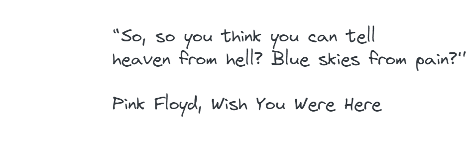

Clean Code Notes

It is hard to find software engineer these days that has never heard of Clean code. At the same time in many organizations code that runs on production brings bugs and pain every day.
So, what is Clean code and why it is important?
Clean code is set of principles for writing clear, understandable, and maintainable code. It is not strict rules and applying each principle needs to make sense in concrete situation.
Two main reasons to use Clean Code principles are:
-
decreasing the cost of maintenance and support of software - easier to make changes, add new functionalities and find defects
-
making life of software engineers simpler.
There is a list of principles that I use frequently.
1. Meaningful names of variables
- one word per concept
- classes and objects should have noun or noun phrase names
- readable and searchable
2. Small methods
- one level of abstraction per method
- method should do one thing
3. Avoid flag argument
-
create separate methods, should be a part of API
4. Command query separation
- each method should be only command or query
- command performs an action, do not return anything and has a side effect
- query returns a value, does not perform an action and does not have a side effect
5. DRY – do not repeat yourself
- create helper method
6. Null, do not pass, do not return
- use Null object pattern (needs to be passed through the system without consequences)
7. Clean tests
- one assertion per test
- DAMP (descriptive and meaningful phases) over DRY
Sources: